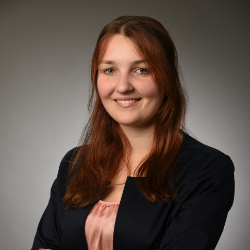

About me

My Story
My name is Franziska v. der Ropp-Cramm, I am 28 years old and I am passionate aboutUI/UX Design.
My professional career started with a studies in Game Art & 3D Animation at the SAE Institute in Stuttgart,which I successfully completed until September 2019.
My CVSkills & Tools
Relevant Skills
- UI Design
- UX Design
- User Research
- Design Thinking
- Design System
- Wireframing
- Prototyping
Tools
- Figma
- Adobe XD
- InVision
- HTML
- CSS
- JavaScript
Strengths and soft skills
My professional experience has strengthened my soft skills, especially teamwork, communication skills and personal responsibility.
am highly motivated, possess a high degree of creativity and have a strong willingness to learn, which enables me to face new challenges with enthusiasm and determination.